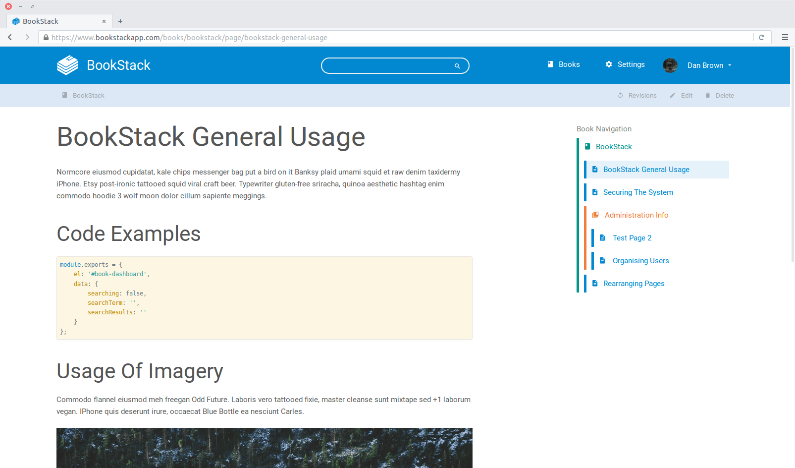

BookStack
Simple & Free Documentation
BookStack is a simple, self-hosted, easy-to-use platform for organising and storing information.
View on GitHub

BookStack is a simple, self-hosted, easy-to-use platform for organising and storing information.
View on GitHubBookStack is fully free and open, MIT licensed. The source is available on GitHub. There is no cost to downloading and installing your own instance of bookstack.
Simplicity has been the top priority when building BookStack. The page editor has a simple WYSIWYG interface and all content is broken into three simple real world groups:
book Books collections_bookmark Chapters description Pages
The content in BookStack is fully searchable. You are able to search at book level or across all books, chapters & pages. The ability to link directly to any paragraph allows you to keeps your documentation connected.
Configuration options allow you to set-up BookStack to suit your use case. You can change the name, Logo and registration options. You can also change whether the whole system is publicly viewable or not.
BookStack is built using PHP, on top of the Laravel framework and it uses MySQL to store data. Performance has been kept in mind and BookStack can run happily on a $5 Digital Ocean VPS.
On top of the powerful search and linking there is also cross-book sorting, Page revisions, Image management. Some more mega-features are planned such as static-site generation and quick exporting.